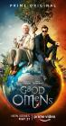

What is this site?
Stephen's Profile
Browser Extension
Dornoch Watchlist
List contains: 9 items, 0.2 hours. (1 are missing runtime)
Title Search (4+ characters):
Group:
None
Example Group: Me and Stephen
Who's seen it:
No filter
Everyone
No One
Anyone
Anyone Has Not
Who's commented:
No filter
Everyone
No One
Anyone
Anyone Has Not
Netflix:
No Filter
Available for Instant Watch
Netflix Link Known
Netflix Link Unknown
Missing Data:
No Filter
Runtime
Season
Release Year (YYYY) or Decade (YYYx):
Sort:
Normal
Newest Episodes First
Episodes in Order
Recently Watched First
Watched in Order
Newest Releases First
Releases in Order
Stephen Klancher
...has seen 0
...has not seen 0.2 hours
Timeline
-
Covers
1.
Lodge 49 (2018)
Stephen Klancher
:
3.
The Man in the High Castle (2015)
Stephen Klancher
:
4.
The Ballad of Buster Scruggs (2018)
Stephen Klancher
:
5.
You're Mine
Airs on 2019-05-26
S2 - E8 of
Killing Eve
Stephen Klancher
:
6.
Miracle Workers (2019)
Stephen Klancher
:
7.
0 (1286)
Releases on 2019-08-07
Stephen Klancher
:
8.
Crashing (2017)
Stephen Klancher
:
9.

The Very Last Day of the Rest of Their Lives
Airs on 2019-05-31
S1 - E6 of
Good Omens
Stephen Klancher
:
10.
Catch-22 (2019)
Stephen Klancher
: